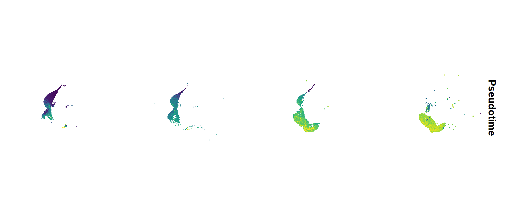
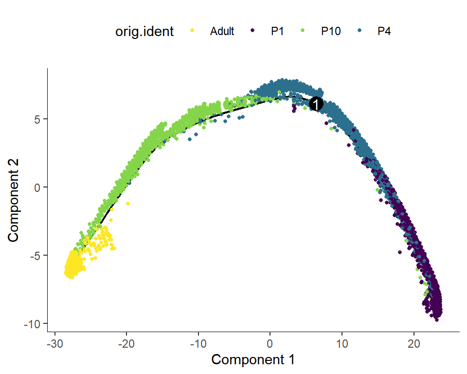
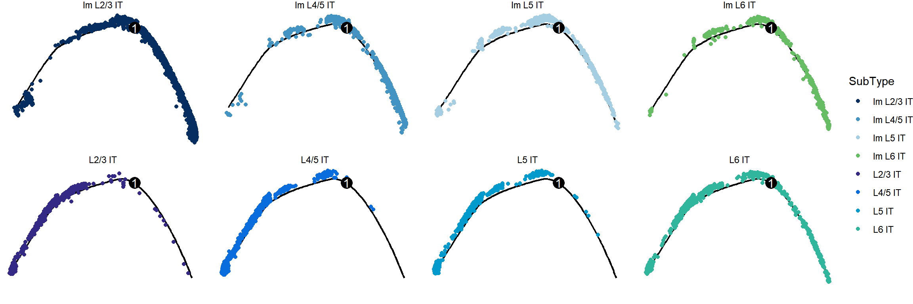
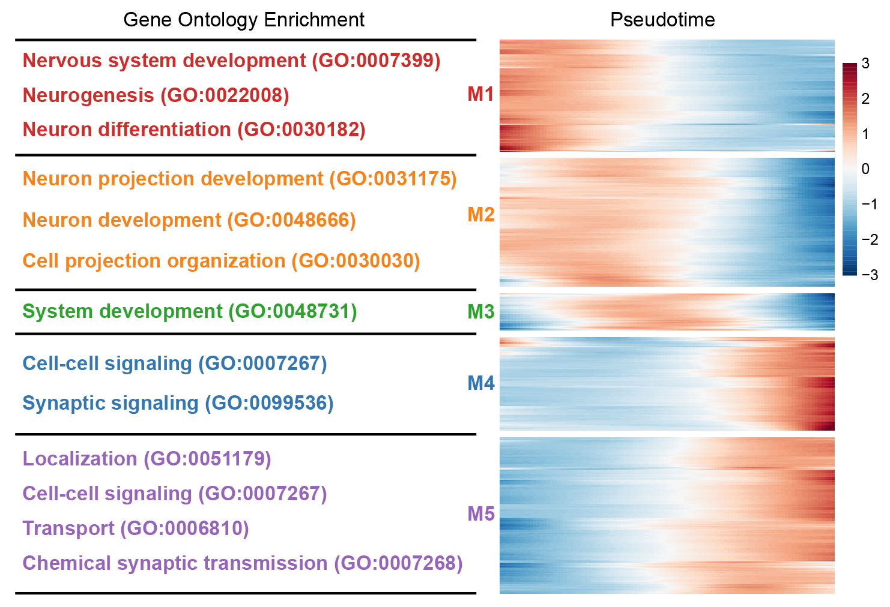
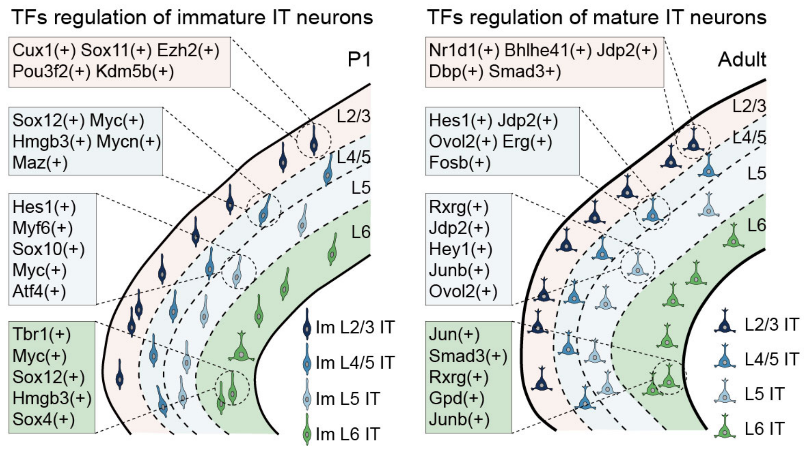
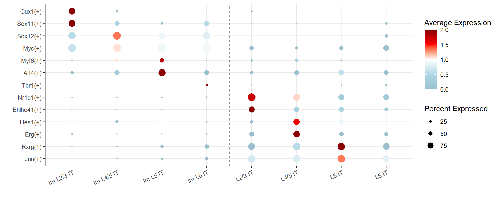
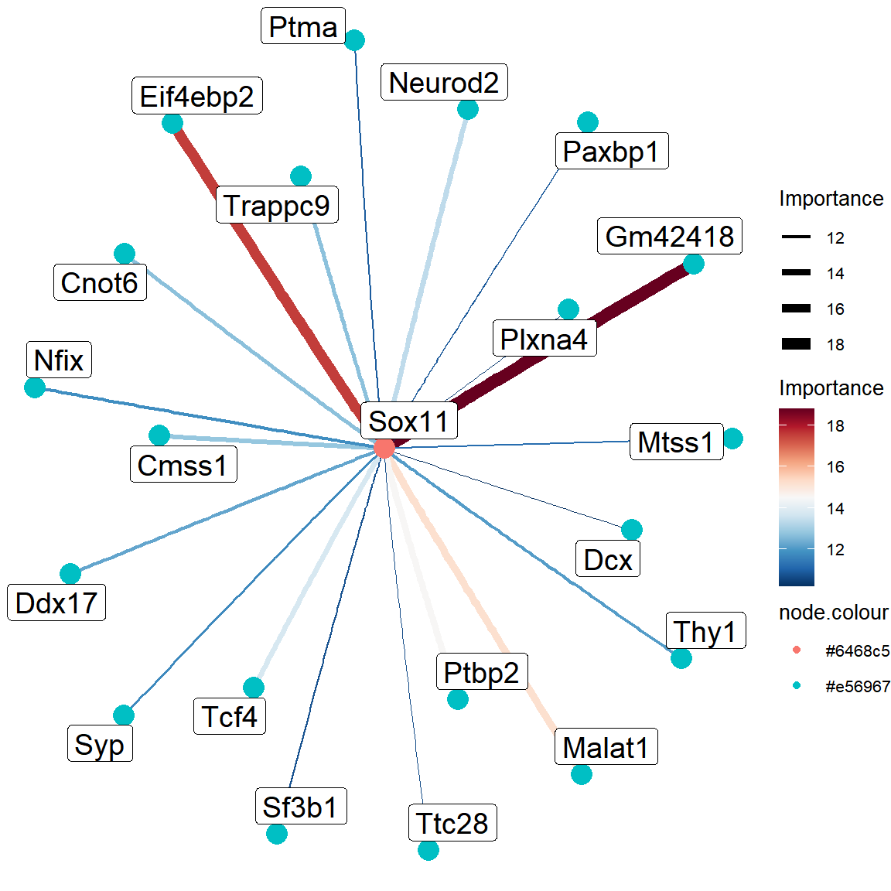

Code
library(Seurat)
library(tidyverse)
library(monocle)
library(SCopeLoomR)
library(ggraph)
library(SummarizedExperiment)
source('bin/Palettes.R')library(Seurat)
library(tidyverse)
library(monocle)
library(SCopeLoomR)
library(ggraph)
library(SummarizedExperiment)
source('bin/Palettes.R')seu.harmony <- readRDS('../data/seu.harmony.rds')
seu.IT <- subset(seu.harmony, cells=colnames(seu.harmony)[which(
seu.harmony$SubType %in% names(col_SubType)[1:8]
)])
cds <- readRDS("../data/Figure3/cds.rds")seu <- seu.IT
seu$Pseudotime <- cds$Pseudotime
seu$SubType <- factor(seu$SubType, levels = names(col_SubType))
seu$orig.ident <- factor(seu$orig.ident, levels = c("P1","P4","P10","Adult"))
Figure_3A <-
FeaturePlot(seu, features = "Pseudotime", split.by = 'orig.ident', ncol = 4) &
scale_color_gradientn(colours = sciRcolor::pal_scircolor(96)) &
theme(axis.line = element_blank(), axis.ticks = element_blank(),
axis.text = element_blank(), plot.title = element_text(size = 30)) &
labs(x='', y='', title = "") &
coord_fixed()
Figure_3A
ggsave("../../Figure/Figure4/Figure_3A.pdf", plot = Figure_3A,
height = 6, width = 18, units = "in")Figure_3B <-
plot_cell_trajectory(cds, color_by = "orig.ident",cell_size=1) +
scale_color_manual(values = col_Time)
Figure_3B$data <- Figure_3B$data[sample(nrow(Figure_3B$data)), ]
Figure_3B
ggsave("../../Figure/Figure3/Figure_3B.pdf", plot = Figure_3B,
height = 4, width = 5, units = "in")cds$orig.ident <- factor(
cds$SubType,
levels = c("Im L2/3 IT","Im L4/5 IT","Im L5 IT","Im L6 IT",
"L2/3 IT","L4/5 IT","L5 IT","L6 IT"))
Figure_3C <-
plot_cell_trajectory(cds, color_by = "SubType") +
scale_color_manual(values = col_SubType) +
facet_wrap(~SubType_v4, nrow=2) +
theme_void()
Figure_3C
ggsave("../../Figure/Figure3/Figure_3C.pdf", plot = Figure_3C,
height = 4, width = 12, units = "in")ordergene <- cds@featureData@data$gene_short_name[cds@featureData@data$use_for_ordering==TRUE]
#BEAM_res <- BEAM(cds[ordergene,], branch_point = 1, cores = 2)
#BEAM_res <- BEAM_res[order(BEAM_res$qval),]
#write.csv(BEAM_res, "../../data/rds/Figure3/BEAM_res_all.csv")
BEAM_res <- read.csv("../data/Figure3/BEAM_res_all.csv", row.names = 1)
BEAM_res <- BEAM_res[order(BEAM_res$qval),]
sig_gene_names <- row.names(subset(BEAM_res, qval < 1e-10))
BEAM_res <- BEAM_res[sig_gene_names,]
Figure_3D <- plot_pseudotime_heatmap(
cds[sig_gene_names[1:1000],],
num_clusters = 5,
cores = 4,
show_rownames = F,
hmcols = colorRampPalette(rev(sciRcolor::pal_scircolor(85)))(100),
return_heatmap = T)
#Go Gene
#clusters <- data.frame(cutree(Figure_3D$tree_row, k=5))
#clusters[,1] <- as.character(clusters[,1])
#colnames(clusters) <- "Gene_clusters"
#write.csv(clusters, "../../data/rds/Figure3/Time_cluster_all.csv")knitr::include_graphics("./images/Figure_3D.png", dpi = 300)
knitr::include_graphics("./images/Figure_3E.png", dpi = 300)
loom <- open_loom('../data/Figure3/SCENIC/aucell.loom')
regulons_incidMat <- SCopeLoomR::get_regulons(loom, column.attr.name="Regulons")
regulonAUC <- assay(SCopeLoomR::get_regulons_AUC(loom,column.attr.name='RegulonsAUC'))Warning: package 'AUCell' was built under R version 4.2.2seu <- seu.IT
regulonsToPlot <- c(
'Cux1(+)','Sox11(+)','Sox12(+)','Myc(+)','Myf6(+)','Atf4(+)','Tbr1(+)',
'Nr1d1(+)','Bhlhe41(+)','Hes1(+)','Erg(+)','Rxrg(+)','Jun(+)')
regulonsToPlot_mat <- scale(t(regulonAUC[regulonsToPlot,]))
seu@meta.data <- cbind(seu@meta.data, regulonsToPlot_mat)
seu$Time_subtype <- factor(seu$SubType, levels = names(col_SubType)[1:8])
Figure_3F <-
DotPlot(
seu,
features = regulonsToPlot,
group.by = 'SubType',
col.min=0, col.max=2, dot.scale = 5) +
coord_flip() +
scale_x_discrete(limits=rev) +
scale_color_gradientn(colours = c("lightblue3", "lightblue", "white", "red", "red4")) +
theme_bw() +
theme(axis.text.x = element_text(angle = 25, hjust = 1)) +
geom_hline(yintercept = c(4.5), linetype="dashed") +
labs(x="",y="")
Figure_3F
ggsave("../../Figure/Figure3/Figure_3F.pdf", plot = Figure_3F,
height = 3, width = 8, units = "in")grn <- read_tsv("../data/Figure3/SCENIC/grn.tsv")
selected_tf <- c("Sox11","Sox12","Atf4","Tbr1")[1]
sub_grn <- grn %>%
filter(TF == selected_tf) %>%
group_by(TF) %>%
top_n(20, importance) %>%
ungroup()
nodes <- data.frame(
node = unique(c(sub_grn$TF, sub_grn$target))
)
nodes$node.size <- ifelse(nodes$node %in% selected_tf, 10, 10)
nodes$node.colour <- ifelse(nodes$node %in% selected_tf, "#6468c5", "#e56967")
edges <- data.frame(
from = sub_grn$TF,
to = sub_grn$target,
edge.width = sub_grn$importance,
edge.colour = sub_grn$importance
)
graph_data <- tidygraph::tbl_graph(nodes = nodes, edges = edges, directed = TRUE)
# TF network
ggraph(graph_data, layout = "stress", circular = TRUE) +
geom_edge_arc(aes(edge_colour = edge.colour, edge_width = edge.width)) +
geom_node_point(aes(colour = node.colour, size = node.size)) +
geom_node_label(aes(label = node), size = 5, repel = TRUE) +
theme_void() +
scale_edge_color_gradientn(colors = rev(sciRcolor::pal_scircolor(85))) +
scale_edge_width_continuous(range = c(0.2, 3)) +
scale_size_continuous(guide = "none") +
theme(
legend.position = "right",
legend.title = element_text(size = 10),
legend.text = element_text(size = 8)
) +
labs(edge_width = "Importance", edge_colour = "Importance")
ggsave('../../Figure/Figure3/Figure_3G/Sox11_netplot.pdf', width = 6, height = 5)data <- as.data.frame(regulonsToPlot_mat)
data$UMAP_1 <- as.numeric(seu.IT@reductions$umap@cell.embeddings[,"UMAP_1"])
data$UMAP_2 <- as.numeric(seu.IT@reductions$umap@cell.embeddings[,"UMAP_2"])
data$Time <- seu.IT$orig.ident
data$SubType <- seu.IT$SubType
data$Pseudotime <- cds$Pseudotime
gene <- "Sox11(+)"
df <- data.frame(
UMAP_1 = data$UMAP_1,
UMAP_2 = data$UMAP_2,
value = data[,gene]
)
df$value[df$value>3] <- 3
df$value[df$value<0] <- 0
df <- df[order(df$value),]
df <- df[df$UMAP_1<0 & df$UMAP_1 > -12 & df$UMAP_2<8,]
Figure_3H <-
ggplot(df, mapping=aes(x=UMAP_1, y=UMAP_2, color=value)) +
geom_point() +
theme_void() +
theme(legend.position = "none") +
coord_fixed() +
scale_color_gradientn(colours = c("lightblue3", "lightblue", "white", "red", "red4"), limits = c(0,3))
Figure_3H
ggsave("../../Figure/Figure3/Figure_3H/Sox11(+)_UMAP.png", plot = Figure_3H,
height = 6, width = 6, units = "in")